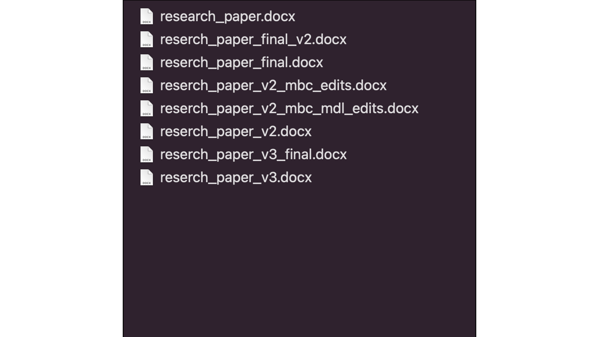
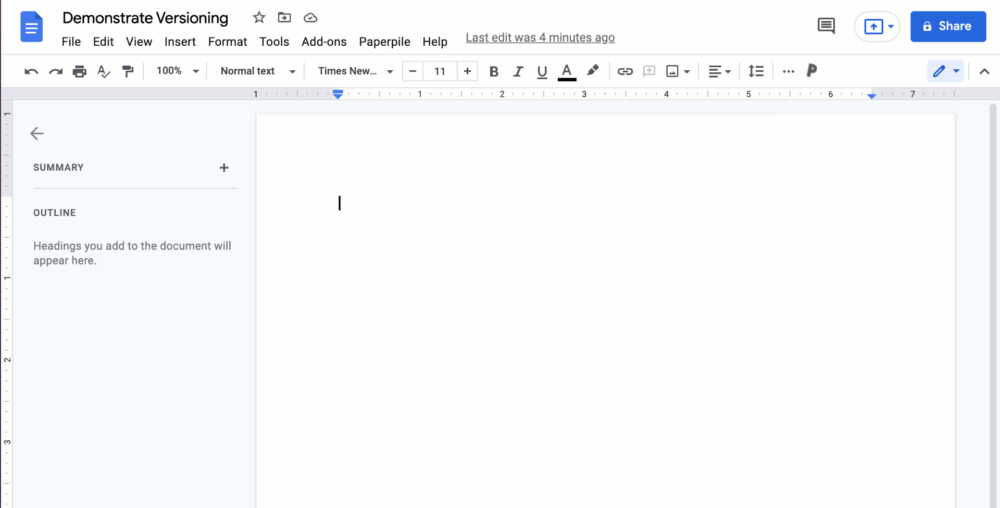
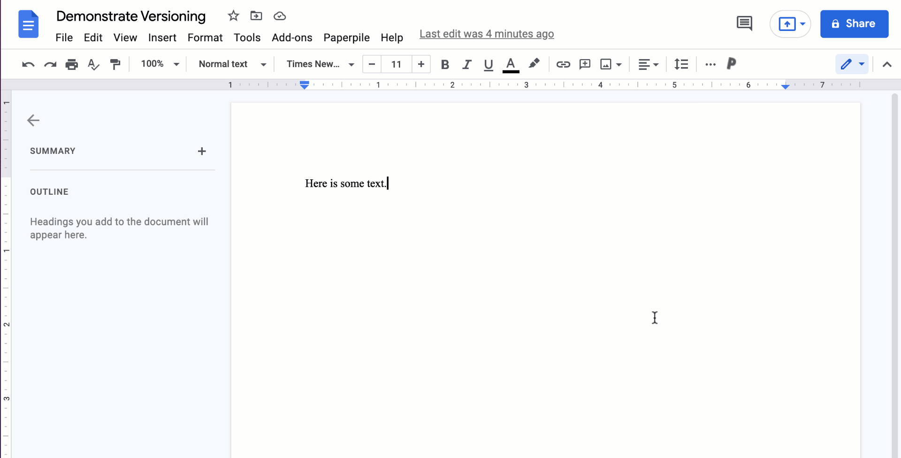
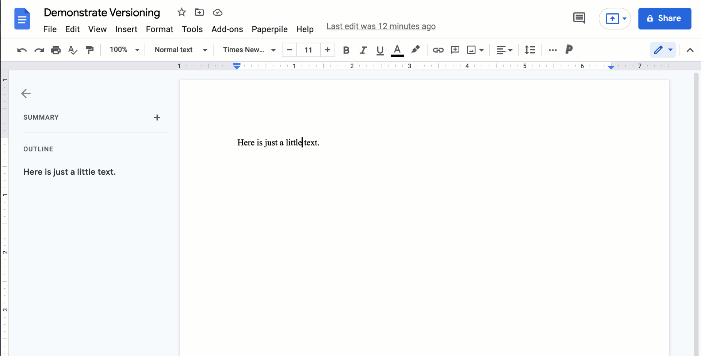
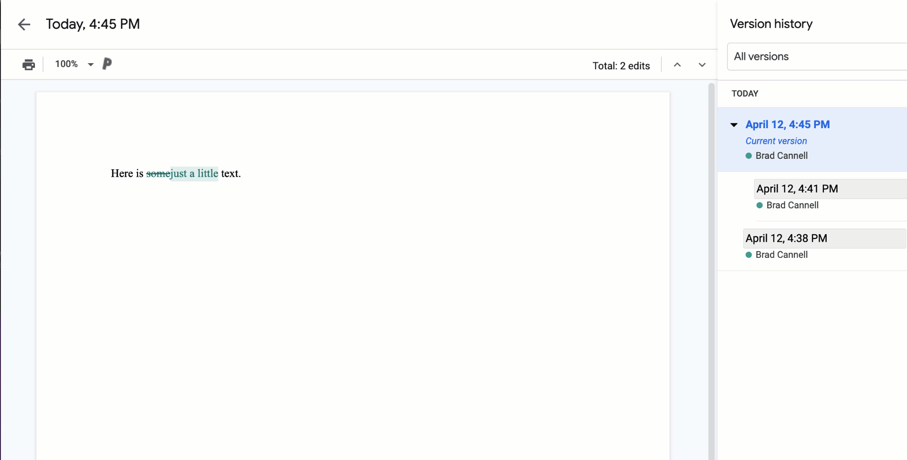
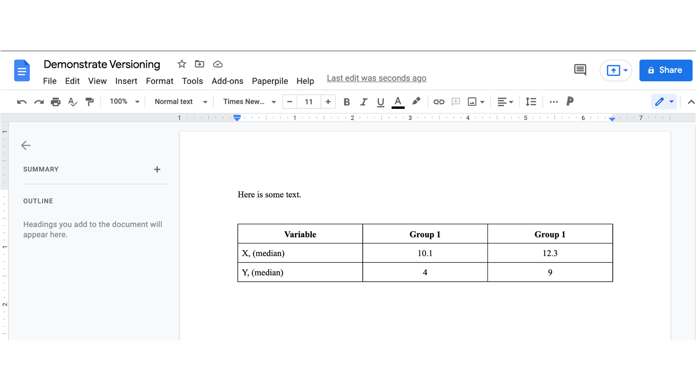
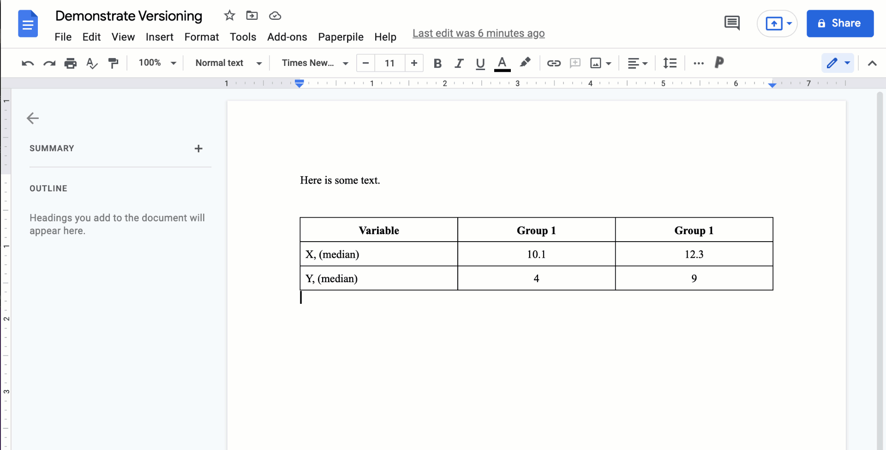

38 Introduction to git and GitHub
If you read this book’s introductory material, specifically the section on Contributing to R4Epi, then you have already been briefly exposed to GitHub. If not, taking a quick look at that section may be useful. GitHub is a website specifically designed to facilitate collaboratively creating programming code. In many ways, GitHub is a cloud-based file storage service like Dropbox, Google Drive, and OneDrive, but with special tools built-in for collaborative coding. Git is the name of the versioning software that powers many of GitHub’s special tools. We will talk about what versioning means shortly.
The goal of this, and the next few, chapters isn’t to teach you everything you need to know about git and GitHub. Not even close! That would fill up its own book. The goal here is just to expose you to git and GitHub, show you a brief example of how they may be useful to you, and provide you with some resources you can use to learn more if you’re interested.
But, why should you be interested in the first place? Well, there are at least four overarching reasons why you should consider learning to use git and GitHub as part of your workflow when your projects include data and/or coding:
- Versioning
- Preservation
- Reproducibility
- Collaboration
We’ll elaborate on what each of these means to us below. Then, we will introduce you to git and GitHub, and explain why they are some of the best tools currently available to help you with versioning and collaborating. We’ll go ahead and warn you now — git and GitHub can be hard to wrap your mind around at first. In fact, using git and GitHub still frequently causes us confusion and frustration at times. However, we still believe that the payoff is ultimately worth the upfront investment in time and frustration. Additionally, we will do our best to make this introduction as gentle, comprehensible, and practically applicable as possible.
38.1 Versioning
Have you ever worked on a paper or report and had a folder on your computer that looked something like this?

Saving a bunch of different versions of a file like this is a real mess. It becomes even worse when you are trying to work with multiple people. What is contained in each document again? What order were the documents created in? What are the differences between the documents? Versioning helps us get around all of these problems.
Instead of jumping straight into learning versioning with git and GitHub, we will start our discussion about versioning using a simple example in Google Docs. Not because Google Docs are especially relevant to anything else in this course, but because there are a lot of parallels between the Google Docs versioning system and the git versioning system when it is paired with Github. However, the Google Docs versioning system is a little bit more basic, easy to understand, and easy to experiment with. Later, we will refer back to some of these Google Docs examples when we are trying to explain how to use git and GitHub. If you’d like to do some experimenting of your own, feel free to navigate to https://docs.google.com/ now and follow along with the following demonstration.
First, we will type a little bit of text in our Google Doc. It doesn’t really matter what we type — this is purely for demonstration purposes. In the example below, we type “Here is some text.”

Now, let’s say that we decide to make a change to our text. Specifically, we decide to replace “some” with “just a little.”

Now, let’s say that we changed our mind again and we want to go back to using the original text. In this case, it would be really easy to go back to using the original text even without versioning. We could just use “undo” or even retype the previous text. But, let’s pretend for a minute that we changed a lot of text, and that we made those changes several weeks ago. Under those circumstances, how might we view the original version of the document? We can use the Google Docs versioning system. To do so, we can click File then Version history then See version history. This will bring up a new view that shows us all the changes we’ve made to this document, and when we made them.

This is great! We don’t have to save a bunch of different files like we saw in the “messy” folder at the beginning of this section. Instead, there is only one document, and we can see all the versions of that document, who created the various versions of that document, when all the various versions of that document were created, and exactly what changed from one version to the next. In other words, we have a complete record of the evolution of this document in the version history — how we got from the blank document we started with to the current version of the document we are working with today.
Further, if we want to turn back the clock to a previous version of the document, we need only select that version and click the Restore this version button like this.

But, you can probably imagine how difficult it can be to find a previous version of a document by searching through a list of dates. In the example above, there were only three dates to look through, but in a real work document, there may be hundreds of versions saved. The dates, by themselves, aren’t very informative. Luckily, when we hit key milestones in the development of our document, Google Docs allows us to name them. That way, it will be easy to find that version in the future if we ever need to refer to it (assuming we give it an informative name).
For example, let’s say that we just added a table to our document that includes the mean values of the variables X and Y for two groups of people - Group 1 and Group 2. Completing this table is a key milestone in the evolution of our document and this is a great time to name the current version of the document just in case we ever need to refer back to it. To do so, we can click File then Version history then Name current version.
Notice that in the example above I used the word commit instead of the word save. In this case, they essentially mean the same thing, but soon you will see that git also uses the word commit to refer to taking a snapshot of the state of our project — similar to the way we just took a snapshot of the state of our document.
Now let’s say that we decide to use medians in our table instead of means. After making that change, our document now looks like this.

Can you guess what we are about to do next? That’s right! We changed our minds again and decided to switch back to using the mean values in the table. No problem! We can easily search for the version of the document that we committed, which includes the table of mean values. We can then restore that version as we did above.

38.2 Preservation
In addition to versioning, the ability to preserve all of your code and related project files in the cloud is another great reason to consider using GitHub. In other words, you don’t have to worry about losing your code if your computer is lost, damaged, or replaced. All of your project files can easily be retrieved and restored from GitHub. Although the same is true for other cloud-based file storage services like Dropbox, Google Drive, and OneDrive, remember that GitHub has special built-in tools that those services do not provide.
38.3 Reproducibility
Reproducibility, or more precisely, reproducible research, is a term that may be unfamiliar to many of you. Peng and Hichs (2021) give a nice introduction to reproducible research:1
Scientific progress has long depended on the ability of scientists to communicate to others the details of their investigations… In the past, it might have sufficed to describe the data collection and analysis using a few key words and high-level language. However, with today’s computing-intensive research, the lack of details about the data analysis in particular can make it impossible to recreate any of the results presented in a paper. Compounding these difficulties is the impracticality of describing these myriad details in traditional journal publications using natural language. To address this communication problem, a concept has emerged known as reproducible research, which aims to provide for others far more precise descriptions of an investigator’s work. As such, reproducible research is an extension of the usual communications practices of scientists, adapted to the modern era.
They go on to define reproducible research in the following way:1 2
A published data analysis is reproducible if the analytic data sets and the computer code used to create the data analysis are made available to others for independent study and analysis.
We will not delve deeper into the general importance and challenges of reproducible research in this book; however, we encourage readers who are interested in learning more about reproducible research to take a look at both of the articles cited above. Additionally, we believe it’s important to highlight that GitHub is a great tool for making our research more reproducible. Specifically, it provides a platform where others can easily download the data (when we are allowed to make it available), computer code, and documentation needed to recreate our research results. This is a great asset for scientific progress, but only if researchers like us use it effectively.
38.4 Collaboration
In the sections above, we discussed the ways in which git and GitHub are tools we can use for versioning, preserving our code in the cloud, and making our research more reproducible. All of these are important benefits of using git and GitHub even if we don’t routinely collaborate with others to complete our projects. However, the power of GitHub is even greater when we think about using it as a tool for collaboration — including collaboration with our future selves.
For example, one research project that we (the authors) both work on is the Detection of Elder abuse Through Emergency Care Technicians (DETECT) project. Let’s say that we would like to start collaborating with you on DETECT. Perhaps we need your help preprocessing some of the DETECT data and conducting an analysis. So, how do we get started?
Because we created a repository on GitHub for the DETECT project, all of the files and documentation you need to get started are easily accessible to you. In fact, you don’t even have to reach out to us first for access. They are freely available to anyone who is interested. Please go ahead and use the following URL to view the DETECT repository now: https://github.com/brad-cannell/detect_pilot_test_5w. GitHub repositories may look a little confusing at first, but you will get used to them with practice.
Note
🗒Side Note: Repository is a git term that can seem a little confusing or intimidating at first. However, it’s really no big deal. You can think of a git repository as a folder that holds all of the files related to your project. On GitHub, each repository has its own separate website where people from anywhere in the world can access the files and documents related to your project. They can also communicate with you through your GitHub repository, post issues to your GitHub repository if they encounter a problem, and contribute code to your project.
We could have emailed the files back and forth, but what if we accidentally forget to send you one? What if one of the files is too large to email? What if two people are working on the same file at the same time and send out their revisions via email? Which version should we use? In the chapters that follow, we will show you how using GitHub to share project files gets around these, and other, collaboration issues.
38.5 Summary
In summary, git and GitHub are awesome tools to use when our projects involve research and/or data analysis. They allow us to store all of our files in the cloud with the added benefit of versioning and many other collaboration tools. The primary disadvantage of using GitHub instead of just emailing code files or using general-purpose cloud storage services is its learning curve. But, in the following chapters, we hope to give you enough knowledge to make GitHub immediately useful to you. Over time, you can continue to hone your GitHub skills and really take advantage of everything it has to offer. We think if you make this initial investment, it is unlikely that you will ever look back.